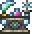

Зелье (Potion) — расходуемый предмет, который может восстанавливать здоровье, ману, либо все вместе, а также дающий положительные или отрицательные эффекты (баффы). Они пригодятся во время сражений, путешествий и добычи ресурсов. Также зельями могут считаться флаконы и еда.
Для создания зелий необходима размещенная бутылка, например на столе. Для получения флаконов нужен Наполняющий столик, который можно купить у НИПа Знахаря. Еду можно приготовить при помощи котла. Лучшим вариантом для создания зелий будет Алхимическая лаборатория, при работе с которой есть шанс 33% не потратить ингредиенты при создании зелья. Найти ее можно в Данже после победы над Скелетроном.
Как уже отмечалось ранее, зельями могут считаться флаконы и еда. Обыкновенные зелья разделяются на восстановливающие зелья и зелья баффов. К первым относятся зелья, восстанавливающие ману, здоровье или и то и другое. После применения они выдают отрицательные эфффекты - эффект "Послезельевой болезни", который делает невозможным использование лечебного зелья на протяжении ограниченного времени и эффект "Ослабление волшебства", который снижает урон от магии. Зелья баффов - это большая группа зелий с разные эффекты для разных задач. Флаконы накладывают эффекты на оружие и хлысты